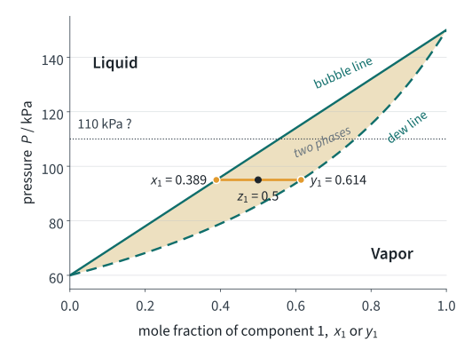

VLE and flash calculations
Session 1 of 7 · 180 minutes
Where this session sits
Before the midterm Equations of state Fugacity and chemical potential Solution thermodynamics
After the midterm · 7 sessions 1 · VLE and flash 2 · Experimental VLE and consistency 3 · Liquid stability and LLE 4 · Solids and adsorption 5 · Chemical equilibrium 6 · Electrochemical equilibrium 7 · Choosing a model from evidence
The first half gave you the condition for phase equilibrium. From today we use it: given T, P and a feed, which phases form, with what compositions and in what amounts?
Why this matters: a flash drum
A hot benzene + toluene liquid is let down to 50 kPa. Part of it boils.
To size the drum and the equipment after it, you need how much vapor forms and what each stream contains.
By the end of today you can answer this by hand and check it in Lab 01.
Answer in Lab 01, real-data case (NIST Antoine, ideal liquid): β = 0.593, y = 0.491, x = 0.268.
What you already know
From the first half At equilibrium each component has the same fugacity in every phase.
\hat f_i^{\,V}=\hat f_i^{\,L}
At low pressure Ideal vapor and the pure-liquid standard state give
y_iP=x_i\gamma_iP_i^{\text{sat}}
Today: ideal liquid Set γi = 1. This is Raoult’s law, the simplest case to learn the method on.
y_iP=x_iP_i^{\text{sat}}
Sessions 2 and 3 bring back γ ≠ 1 from measured data.
By the end of today you can
Where you show it
- Read a Pxy diagram and say whether a feed is liquid, vapor or two phases. Activity 1
- Calculate bubble and dew pressures of an ideal mixture. Concepts, Lab 01 demo
- Solve a TP flash for x, y and the vapor fraction β, and check it with a component balance. Activity 2
- Explain how raising P at fixed T changes the split, using numbers. Exit ticket
The 180-minute route
0–30 Essential concepts Pxy diagram, bubble and dew, flash
30–40 Activity 1 predict
40–60 Demo Lab 01
60–70 Break
70–140 Activity 2 · pair investigation Lab 01: one change, one hand check
140–180 Discussion and exit ticket answer the session question
Session question How does pressure change the phase split at fixed temperature?
Before class · 15–20 min Read the 3-page note and answer its three preparation questions.
After class · 30–40 min Finish the Lab 01 comparison and submit the downloaded study file with your name and ID.
Studying on your own? Follow the same order. Turn on narration or captions at the top right, and pause at each activity slide.
One diagram answers three questions

Which phases? Compare P with the two lines.
P_{\text{bubble}}=\sum_i x_iP_i^{\text{sat}} \qquad \frac{1}{P_{\text{dew}}}=\sum_i\frac{y_i}{P_i^{\text{sat}}}
What compositions? Read the ends of the tie line: y_i=K_ix_i.
How much of each? The feed position on the tie line:
\beta=\frac{z_1-x_1}{y_1-x_1}=0.494
Lab 01 synthetic binary · 350 K · P₁ˢᵃᵗ = 150 kPa, P₂ˢᵃᵗ = 60 kPa · z₁ = 0.5
Predict before you calculate
Activity 1 · 10 minutes · alone, then with a partner
Same temperature, same feed. The pressure rises from 95 to 110 kPa.
Liquid Two phases Vapor
Write your choice and one reason taken from the diagram. Then compare with your partner. Do not calculate yet.
On your own: pause here, write your answer, then go to the next slide.
Demonstration · Lab 01
- Load the synthetic case.
- Set P = 95 kPa and z₁ = 0.5, then press Calculate.
- Check the tie line against the diagram.
- Save it as your baseline, change only P, and test your prediction.

Lab 01 should report x₁ = 0.3889 · y₁ = 0.6140 · β = 0.4935 · bubble P = 105.0 kPa · dew P = 85.71 kPa